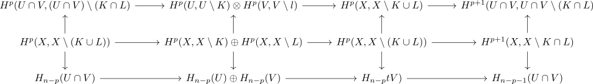

mayer vietoris and cap product
Proposition
Let $(U,V)$ be an open cover of a regular hausdorff space $X$, $s \in H_n^{\mathrm{lf}}(X;R)$ an element in the locally finite homology and
\begin{align*}
\iota^U: U \cap V \rightarrow& U \\
\iota^V: U \cap V \rightarrow& V \\
j^{U}: U \rightarrow& X \\
j^{V}: V \rightarrow& X \\
j^{U \cap V}: U \cap V \rightarrow& X
\end{align*}
the subspace inclusions.
Then the diagram
\begin{displaymath}
\begin{tikzcd}
H_c^p(U \cap V;M) \arrow[]{r}{\iota_{#}^U, \iota_{#}^V} \arrow[]{d}{\cap} & H_c^p(U;M) \oplus H_c^p(V;M) \arrow[]{r}{} \arrow[]{d}{\cap_{U}(s) \oplus \cap_{V}(s)} & H_{c}^p(X) \arrow[]{r}{\partial} \arrow[]{d}{\cap s}& H^{p+1}_c(U \cap V;M) \arrow[]{d}{\cap_{U \cap V}(s)} \\
H_{n-p}(U \cap V;M) \arrow[]{r}{ \iota_{*}^U ,\iota_*^V} & H_{n-p}(U) \oplus H_{n-p}(V) \arrow[]{r}{} & H_{n-p}(X) \arrow[]{r}{} & H_{n-p-1}(U \cap V;M) \\
\end{tikzcd}
\end{displaymath}commutes and both rows are exact
Note that here
- $\iota_{#}^U, \iota_{#}^V, j_#^U, j_#^V$ are the map induced by excision for the locally finite homology
- $\cap_{-)(s)$ is cap product after changing the element $H_n^{\mathrm{lf}}(X;R)$ to <>
see:
Proof
exact rows
top
bottom
map
Note that the maps
\begin{align*}
\cap: \mathcal{K}_{U} \times \mathcal{K}_V \rightarrow& \mathcal{K}_{U \cap V} \\
(K,L) \mapsto& K \cap L \\
\cup: \mathcal{K}_{U} \times \mathcal{K}_V \rightarrow& \mathcal{K}_{X} \\
(K,L) \mapsto& K \cup L
\end{align*}
are surjective (cf. product of the directed poset of compacts surjects to union / product of the directed poset of compacts surjects to intersection)
Then

It suffices to show commutativity, then taking the colimit over $\mathcal{K}_U \times \mathcal{K}_{V}$
regular hausdorff space and compact as union of a finite cover